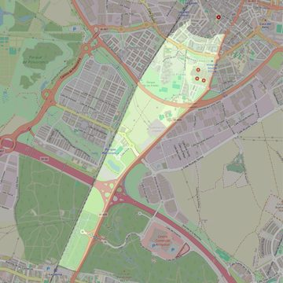

Nuestra Señora de la Salud
- Arciprestazgo
- Leganés
- Población
- Leganés
- Dirección postal
- c/ Los Frailes, 1
- Código postal
- 28914
- Extensión
- 1,79 km² (179 ha)
- Teléfono
- 916 932 600
- Correo electrónico
- nssalud-leganes@diocesisgetafe.es
- Información demográfica
- De la parroquia · De la población (Leganés) · Del arciprestazgo (Leganés)


Descargar mapaLímites según decreto
"Partiendo de la carretera de Fuenlabrada en su confluencia con la calle Pizarro, siguen el eje de esta última continuando por el Paseo de Cristóbal Colón y por el Paseo de Santa Teresa hasta el ferrocarril, siguen por el ferrocarril, en direccion sur, hasta el final del término municipal de Leganés, continúan por el límite del término municipal, en dirección este hasta la carretera de Fuenlabrada, siguiendo por ésta, en direccion norte, hasta la calle Pizarro, punto de partida" (Decreto de erección de 16-2-70)
Desarrollos urbanísticos previstos
- Leganés: sector PP-4 «Puerta de Fuenlabrada»: 852 viviendas · en obras o en venta · el 5,7 % de su superficie está en esta parroquia
Las cifras y sus fuentes están en la ficha de cada desarrollo, en la sección «Previsión de desarrollos urbanísticos».